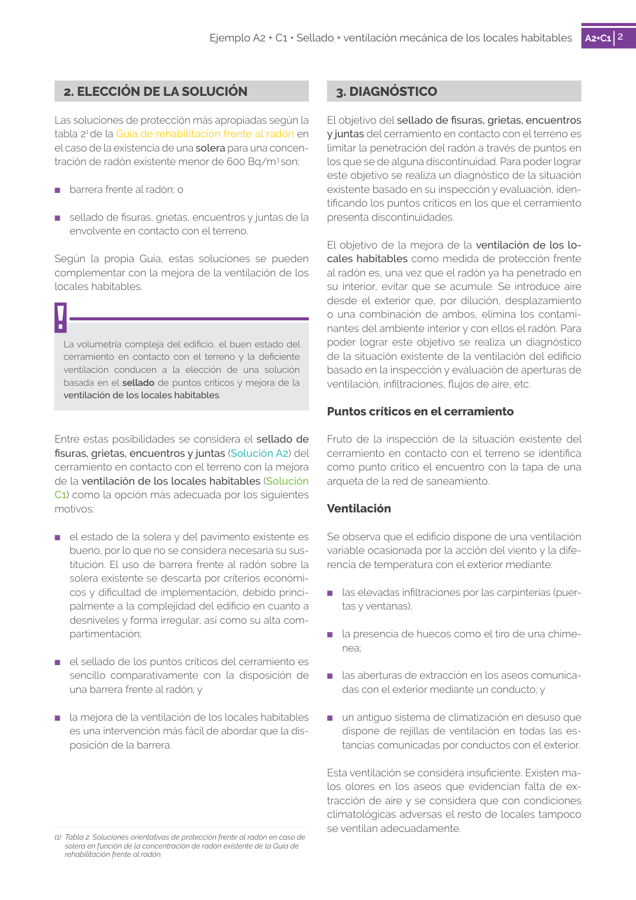

<!doctype html>
<html lang="es"><head><meta charset="utf-8">
<meta name="viewport" content="width=device-width, initial-scale=1">
<title>GUIA · Página física 2</title><link rel="stylesheet" href="../estilo.css">
</head><body>
<nav><a href="../index.html">Índice</a> › <a href="../doc/guia-pdf-da44924e40b7-2018-9e66451d312d.html">GUIA</a></nav>

<h1>GUIA · Página física 2</h1>
<header class="meta"><p><strong>Ejemplo A2 C1 Sellado ventilacion mecanica de los locales habitables</strong> · edición 2018 · capa guia</p>
<p>Documento <code>GUIA-PDF-da44924e40b7</code> · SHA-256 del PDF <code>9e66451d312dccc7d6f3ddf5e09443a0e38f03ca412ac44a15e68aeee660e036</code></p>
<p>Página física 2 de 5.</p>
<p><a href="../../contenido/docs/GUIA-PDF-da44924e40b7/2018__9e66451d312d/fuente.pdf#page=2">Copia fiel del PDF fuente</a> · <a href="https://www.codigotecnico.org/pdf/GuiasyOtros/GuiaRadon/Ejemplo_A2+C1_Sellado+ventilacion_mecanica_de_los_locales_habitables.pdf">Fuente oficial</a></p>
<p><a href="https://www.codigotecnico.org/Guias/GuiaRadon.html">Ficha de la disposición en la fuente oficial</a></p>
<div class="cita"><p><a href="../../contenido/docs/GUIA-PDF-da44924e40b7/2018__9e66451d312d/fuente.pdf#page=5">Créditos y autoría en el PDF fuente</a>. Reproducción con cita de fuente y autores.</p>
<p>Permiso literal: Se permite la reproducción total o parcial del contenido de este do­ Edición actual: septiembre 2020 cumento siempre y cuando se cite la fuente original y a sus autores.</p>
<details><summary>Leer los créditos completos y la autoría</summary><pre class="literal">                           Ejemplo A2 + C1 • Sellado + ventilación mecánica de los locales habitables  A2+C1 55


                                                                     Este documento ha sido elaborado por el Instituto de ciencias
                                                         de la construcción Eduardo Torroja (IETcc) bajo la supervisión
                                                         de la Dirección General de Agenda Urbana y Arquitectura del
                                                                             Ministerio de Transportes, Movilidad y Agenda Urbana (MITMA).

                                                                              El IETcc, perteneciente al Consejo Superior de Investigaciones
                                                                                 Científicas (CSIC), es el centro de investigación en edificación

                                                             SECRETARÍA                                                                GENERAL                                                                      DE                  de                                                                              referencia                                                                     en                                                                                  España.                                                                                 La                                                                                     Unidad                                                                                    de                                                                                                        Calidad en la                                                                                                                  Construc­
                                                  AGENDA URBANA                                                                     Y VIVIENDA                              MINISTERIO            GOBIERNO                          DE                               TRANSPORTES,                                          MOVILIDAD                                                                       ción                                                                          del IETcc                                                                                asesora                                                                                                                al                                                                     MITMA                                                                                     en                                                                                                                               la elaboración                                                                                                                      del                                                                                                           Código            DE ESPAÑA      Y                         AGENDA                                URBANA                                                        DIRECCIÓN                                                                GENERAL                                                                      DE
                                                  AGENDA URBANA Y ARQUITECTURA                Técnico de la Edificación que, desde el año 2019, cuenta con la
                                                                   sección HS6 Protección frente a la exposición al radón.


                              MINISTERIO            GOBIERNO                         DE                               CIENCIA                                              Dirección y Coordinación:            DE ESPAÑA                                E INNOVACIÓN
                                                                            Ministerio de Transportes, Movilidad y Agenda Urbana
                                                                           Isabel Marcos Anasagasti
                                                               Raquel Lara Campos
                                                              Eduardo González de Prado
Esta ficha forma parte de una serie de documentos englobados                                                                                   Instituto de ciencias de la construcción Eduardo Torroja CSIC
en una misma publicación, cuyo objetivo es constituir una he­                                                                                      Pilar Linares Alemparte
rramienta de ayuda para el diseño de soluciones de protección
frente al radón:                                                        Autoras:
                                                                                      Pilar Linares Alemparte
■  Guía de rehabilitación frente al radón
                                                                   Sonia García Ortega
Fichas de soluciones:
                                                                   Diagnóstico y diseño de la solución:
A: De aislamiento del edificio                                                                   Sonia García Ortega
■       Solución A1. Barrera frente al radón                                    Pilar Linares Alemparte
■       Solución A1-1. Barrera frente al radón. Encuentros
■       Solución A2. Sellado de fisuras, grietas, encuentros y juntas      Ejecución material de la obra:
■       Solución A3. Puertas estancas                               Ayuntamiento de Torrelodones
■       Solución A4. Creación de sobrepresión
                                                                               Edita:
B: De reducción del radón antes de que penetre en los locales       Centro de Publicaciones Secretaría General Técnica
  a proteger                                                               Ministerio de Transportes, Movilidad y Agenda Urbana©

■       Solución B1. Ventilación del espacio de contención: cá­                                                                  Entidad colaboradora:
                 mara de aire                                                                Consejo Superior de Investigaciones Científicas · CSIC
■       Solución B2. Ventilación del espacio de contención: loca­                                                                             Ministerio de Ciencia e Innovación
                      les no habitables
■       Solución B3. Despresurización del terreno                        Catálogo de publicaciones de la Administración General
                                                                         del Estado: publicacionesoficiales.boe.es
C: De reducción del radón tras penetrar en los locales a proteger
■       Solución C1. Ventilación de los locales habitables                  Centro virtual de publicaciones del Ministerio de Transpor­
                                                                                         tes, Movilidad y Agenda Urbana: www.mitma.gob.es

Fichas de ejemplos:
                                                                     Página web del Código Técnico de la Edificación:
■      Ejemplo A1+B3. Barrera frente al radón + despresurización          www.codigotecnico.org
                    con red de tubos
■      Ejemplo A2+B1. Sellado + ventilación de la cámara sanitaria      Maquetación y diseño gráfico:
■      Ejemplo A2+B3. Sellado + despresurización con red de tubos       Lapizmente. Estrategia • Diseño Gráfico
■      Ejemplo A2+C1. Sellado + ventilación mecánica de los loca-                                                                     Los contenidos o ideas recogidas en este documento pertenecen a
                          les habitables                                   sus autores. Este documento está basado en el conocimiento dispo­
                                                                                    nible en el momento de su publicación. No se aceptará por las institu­
Publicación completa:                                                    ciones ni los autores implicados responsabilidad de ningún tipo por el
ISBN: 978-84-498-1045-9                                             uso de estas recomendaciones. Las figuras tienen carácter ilustrativo
NIPO: 796-20-136-5                                                   y no deben interpretarse como detalles constructivos.
1ª edición: septiembre 2020                                                               Se permite la reproducción total o parcial del contenido de este do­
Edición actual: septiembre 2020                                    cumento siempre y cuando se cite la fuente original y a sus autores.</pre></details></div>
<div class="aviso"><strong>Alcance y límites</strong><ul><li>Extracción automática sin revisión técnica humana completa. Contraste tablas, fórmulas, notas y excepciones con el PDF. La edición disponible no determina la vigencia ni la aplicabilidad a un proyecto.</li><li>Guia o documento divulgativo; no es texto normativo.</li><li>Extracción automática; el cotejo humano está pendiente.</li><li>Semántica y tablas no equivalen a validación exhaustiva.</li></ul></div></header>
<nav><a href="guia-pdf-da44924e40b7-2018-9e66451d312d__p0001.html">← Página 1</a> · <a href="guia-pdf-da44924e40b7-2018-9e66451d312d__p0003.html">Página 3 →</a></nav>
<p>Formato: <a href="../../contenido/docs/GUIA-PDF-da44924e40b7/2018__9e66451d312d/pagina/p0002.md">Texto de la página (Markdown)</a></p>
<p><a href="../../contenido/docs/GUIA-PDF-da44924e40b7/2018__9e66451d312d/bloque/p0002.json">JSON de bloques</a></p>
<pre class="literal">2
Ejemplo A2 + C1 • Sellado + ventilación mecánica de los locales habitables
A2+C1 2
3. DIAGNÓSTICO
El objetivo del sellado de fisuras, grietas, encuentros 
y juntas del cerramiento en contacto con el terreno es 
limitar la penetración del radón a través de puntos en 
los que se de alguna discontinuidad. Para poder lograr 
este objetivo se realiza un diagnóstico de la situación 
existente basado en su inspección y evaluación, iden­
tificando los puntos críticos en los que el cerramiento 
presenta discontinuidades.
El objetivo de la mejora de la ventilación de los lo­
cales habitables como medida de protección frente 
al radón es, una vez que el radón ya ha penetrado en 
su interior, evitar que se acumule. Se introduce aire 
desde el exterior que, por dilución, desplazamiento 
o una combinación de ambos, elimina los contami­
nantes del ambiente interior y con ellos el radón. Para 
poder lograr este objetivo se realiza un diagnóstico 
de la situación existente de la ventilación del edificio 
basado en la inspección y evaluación de aperturas de 
ventilación, infiltraciones, flujos de aire, etc.
Puntos críticos en el cerramiento
Fruto de la inspección de la situación existente del 
cerramiento en contacto con el terreno se identifica 
como punto crítico el encuentro con la tapa de una 
arqueta de la red de saneamiento.
Ventilación
Se observa que el edificio dispone de una ventilación 
variable ocasionada por la acción del viento y la dife­
rencia de temperatura con el exterior mediante:
	
■
las elevadas infiltraciones por las carpinterías (puer­
tas y ventanas);
	
■
la presencia de huecos como el tiro de una chime­
nea;
	
■
las aberturas de extracción en los aseos comunica­
das con el exterior mediante un conducto; y
	
■
un antiguo sistema de climatización en desuso que 
dispone de rejillas de ventilación en todas las es­
tancias comunicadas por conductos con el exterior.
Esta ventilación se considera insuficiente. Existen ma­
los olores en los aseos que evidencian falta de ex­
tracción de aire y se considera que con condiciones 
climatológicas adversas el resto de locales tampoco 
se ventilan adecuadamente.
2. ELECCIÓN DE LA SOLUCIÓN
Las soluciones de protección más apropiadas según la 
tabla 21 de la Guía de rehabilitación frente al radón en 
el caso de la existencia de una solera para una concen­
tración de radón existente menor de 600 Bq/m3 son:
	
■
barrera frente al radón; o
	
■
sellado de fisuras, grietas, encuentros y juntas de la 
envolvente en contacto con el terreno.
Según la propia Guía, estas soluciones se pueden 
complementar con la mejora de la ventilación de los 
locales habitables.
La volumetría compleja del edificio, el buen estado del 
cerramiento en contacto con el terreno y la deficiente 
ventilación conducen a la elección de una solución 
basada en el sellado de puntos críticos y mejora de la 
ventilación de los locales habitables.
Entre estas posibilidades se considera el sellado de 
fisuras, grietas, encuentros y juntas (Solución A2) del 
cerramiento en contacto con el terreno con la mejora 
de la ventilación de los locales habitables (Solución 
C1) como la opción más adecuada por los siguientes 
motivos:
	
■
el estado de la solera y del pavimento existente es 
bueno, por lo que no se considera necesaria su sus­
titución. El uso de barrera frente al radón sobre la 
solera existente se descarta por criterios económi­
cos y dificultad de implementación, debido princi­
palmente a la complejidad del edificio en cuanto a 
desniveles y forma irregular, así como su alta com­
partimentación;
	
■
el sellado de los puntos críticos del cerramiento es 
sencillo comparativamente con la disposición de 
una barrera frente al radón; y
	
■
la mejora de la ventilación de los locales habitables 
es una intervención más fácil de abordar que la dis­
posición de la barrera.
(1)  Tabla 2. Soluciones orientativas de protección frente al radón en caso de 
solera en función de la concentración de radón existente de la Guía de 
rehabilitación frente al radón.
</pre>
<figure><a href="../../contenido/docs/GUIA-PDF-da44924e40b7/2018__9e66451d312d/figura/p0002.png"></a><figcaption>Página visual 2, para contrastar fórmulas, tablas y figuras.</figcaption></figure>
<h2>Segmentos que incluyen esta página</h2><ul>
<li><a href="../apartado/guia-pdf-da44924e40b7-2018-9e66451d312d__a0004.html">a0004 · 1. DESCRIPCIÓN DEL EDIFICIO / EJEMPLO A2+C1</a></li>
<li><a href="../apartado/guia-pdf-da44924e40b7-2018-9e66451d312d__a0005.html">a0005 · 3. DIAGNÓSTICO</a></li>
<li><a href="../apartado/guia-pdf-da44924e40b7-2018-9e66451d312d__a0006.html">a0006 · 3. DIAGNÓSTICO / Puntos críticos en el cerramiento</a></li>
<li><a href="../apartado/guia-pdf-da44924e40b7-2018-9e66451d312d__a0007.html">a0007 · 3. DIAGNÓSTICO / Ventilación</a></li>
<li><a href="../apartado/guia-pdf-da44924e40b7-2018-9e66451d312d__a0008.html">a0008 · 2. ELECCIÓN DE LA SOLUCIÓN</a></li>
</ul>
<footer>Generado estáticamente desde el corpus normalizado; sin JavaScript ni servicios externos. El HTML es una vista reproducible; conserve la fuente y la edición al citar.</footer>
</body></html>
